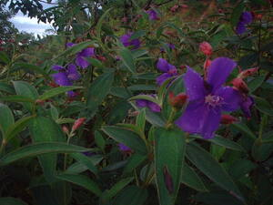
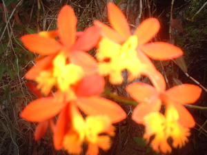
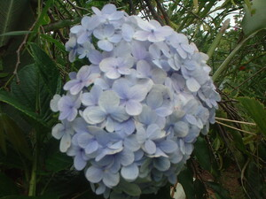
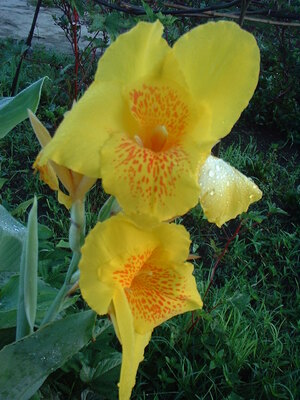
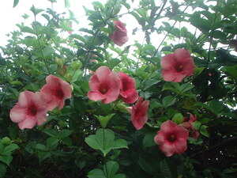

bulak     
/bulak/
n.
“flower”
n.
a flower
Mateles ne egtengtengan ka bulak makalawag.
Yellow flower is nice to look at.
Wrd.Gloss: flower
O. Syn. kabukaran
Eng. flower
Tag. bulaklák
Ceb. bulak
Ilo.: sabong
Tigwanon: bulak
Binukid: bulak
Tagbawa: bulak
Obo: bulak
WBM: bulak
Sarangani: bolak
Cotabato Manobo: bulok
Tasaday: bulok
Dibabawon: buak
Kinamigin: buak
Cagayano: bułak
Proto: bulak
OCM: Ethnobotany (824)
Online dict status: -
Usage level: L,B
v.
for a plant (egbulak, migbulak/imbulak, theme, eg><ø-) to bear flowers
Eng. flowers, to bear
Online dict status: -
Usage level: L,B
v.
for a plant (egpamulak, migpamulak/impamulak, agent, eg><ø-paN-) to be flowering
Egpamulak e ka impamula ku ne kamatis diyè te kamet ney.
The tomatoes that I planted in my garden are flowering already.
Eng. flowering
Online dict status: -
Usage level: L,B
Updated by: RJH,AAA,RUL,QDL,NJK
Last updated: 30/Jul/2011
"bulak" in text "Ka kalibutan"
"bulak" in healthbook "Mania teg pakapatey kag iindes?"
"bulak" in healthbook "Mania teg pakapatey kag iindes?"
"bulak" in healthbook "Mania teg pakapatey kag iindes?"
"bulak" in healthbook "Mania teg pakapatey kag iindes?"
This page last updated: 19/May/2012
Copyright © 2009-2010, Matigsalug Language Christian Association, Inc